Insert Equations into the Live Editor
To describe a mathematical process or method used in your code, insert equations into your live script or function. Only text lines can contain equations. If you insert an equation into a code line, MATLAB® places the equation into a new text line directly under the selected code line.
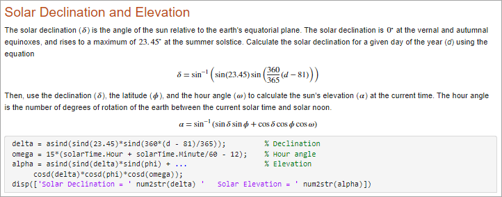
There are two ways to insert an equation into a live script or function.
Insert an equation interactively — You can build an equation interactively by selecting from a graphical display of symbols and structures.
Insert a LaTeX equation — You can enter LaTeX commands and the Live Editor inserts the corresponding equation.
Insert Equation Interactively
To insert an equation interactively:
Go to the Insert tab and click Equation.
A blank equation appears.
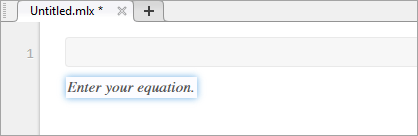
Build your equation by selecting symbols, structures, and matrices from the options displayed in the Equation tab. View additional options by clicking the drop-down arrow
 to the right of each section.
to the right of each section.When adding or editing a matrix, a context menu appears, which you can use to delete and insert rows and columns. You also can use the context menu to change or remove matrix delimiters.
Format your equation using the options available in the Text section. Formatting is only available for text within the equation. Numbers and symbols cannot be formatted. The formatting option is disabled unless the cursor is placed within text that can be formatted.
Keyboard Shortcuts for Equation Editing
The equation editor provides a few shortcuts for adding elements to your equation:
To insert symbols, structures, and matrices, type a backslash followed by the name of the symbol. For example, type
\pito insert a π symbol into the equation. To discover the name of a symbol or structure, hover over the corresponding button in the Equation tab. You can also type backslash in the equation editor to bring up a completion menu of all supported names.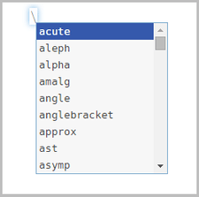
Note
Although the
\syntax closely resembles LaTeX command syntax, entering full LaTeX expressions is not supported when inserting equations interactively.nameTo insert subscripts, superscripts, and fractions, use the symbols ‘
_’, ‘^’ or ‘/’. For example:Type
x_2to insert into the equation.Type
x^2to insert into the equation.Type
x/2to insert into the equation.
To insert a new column into a matrix, type a ‘,’ at the end of the last cell in a matrix row. To insert a new row, type a semicolon ‘;’ at the end of the last cell in a matrix column.
To insert the common symbols listed in this table, type a combination of other symbols.
Keyboard Input Symbol Keyboard Input Symbol Keyboard Input Symbol | | ∥ => ⇒ != ≠ |= ⊧ <--> ⟷ !< ≮ |– ⊢ <-> ↔ !> ≯ –| ⊣ <= ≤ !<= ≰ -> → >= ≥ !>= ≱ <- ← <> ≠ <-- ⟵ ~= ≠
Insert LaTeX Equation
To insert a LaTeX equation:
Go to the Insert tab, click Equation
, and select LaTeX
Equation.Enter a LaTeX expression in the dialog box that appears. For example, you can enter
\sin(x) = \sum_{n=0}^{\infty}{\frac{(-1)^n x^{2n+1}}{(2n+1)!}}.The preview pane shows a preview of equation as it would appear in the live script.
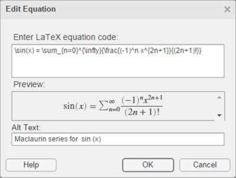
To include a description of the LaTeX equation when exporting the live script to HTML, add text to the Alt Text field. For example, you can enter the text
Maclaurin series for sin(x).The description specifies alternative text for the equation and is saved as an
altattribute in the HTML document. It is used to provide additional information for the equation if, for example, a user is using a screen reader.Press OK to insert the equation into your live script.
LaTeX expressions describe a wide range of equations. This table shows several examples of LaTeX expressions and their appearance when inserted into a live script.
| LaTeX Expression | Equation in Live Script |
|---|---|
a^2 + b^2 = c^2 | |
\int_{0}^{2} x^2\sin(x) dx | |
\sin(x) = \sum_{n=0}^{\infty}{\frac{(-1)^n
x^{2n+1}}{(2n+1)!}} | |
{a,b,c} \neq \{a,b,c\} | |
x^{2} \geq 0\qquad \text{for
all}x\in\mathbf{R} | |
\matrix{a & b \cr c & d} |
Supported LaTeX Commands
MATLAB supports most standard LaTeX math mode commands. These tables show a list of supported LaTeX commands.
Non-ASCII Letters
| Symbol | LaTeX Command | Symbol | LaTeX Command | Symbol | LaTeX Command |
|---|---|---|---|---|---|
| ø | o | œ | oe | å | aa |
| Ø | O | Œ | OE | Å | AA |
| ł | l | æ | ae | ß | ss |
| Ł | L | Æ | AE |
Greek/Hebrew Letters
| Symbol | LaTeX Command | Symbol | LaTeX Command | Symbol | LaTeX Command |
|---|---|---|---|---|---|
| α | alpha | ν | nu | ξ | xi |
| β | beta | ω | omega
| ζ | zeta |
| χ | chi | о | omicron | ɛ | varepsilon |
| δ | delta | ϕ | phi | φ | varphi |
| ε | epsilon | π | pi
| ϖ | varpi |
| η | eta | ψ | psi | ϱ | varrho |
| v | gamma
| ρ | rho | ς | varsigma |
| ι | iota | σ | sigma
| vartheta | |
| κ | kappa | τ | tau | א | aleph |
| λ | lambda
| θ | theta
| ||
| μ | mu | υ | upsilon | ||
| Δ | Delta
| Φ | Phi | Θ | Theta
|
| Γ | Gamma | Π | Pi
| ϒ | Upsilon |
| Λ | Lambda
| Ψ | Psi | Ξ | Xi |
| Ω | Omega
| Σ | Sigma
|
Operator Symbols
| Symbol | LaTeX Command | Symbol | LaTeX Command | Symbol | LaTeX Command |
|---|---|---|---|---|---|
| * | ast | ± | pm | ≀ | wr |
| ★ | star | ∓ | mp | ∩ | cap
|
cdot | ⨿ | amalg | ∪ | cup
| |
| ◦ | circ | ⊙ | odot
| ⊎ | uplus |
| • | bullet | ⊖ | ominus
| ⊓ | sqcap
|
| ◇ | diamond | ⊕ | oplus
| ⊔ | sqcup
|
| ∖ | setminus | ⊘ | oslash
| ∧ | wedge, land |
| × | times | ⊗ | otimes | ∨ | vee, lor |
| ÷ | div | ⨁ | bigoplus | ◁ | triangleleft |
| ⊥ | bot, perp | ⨂ | bigotimes | ▷ | triangleright |
| ⊤ | top | ⨀ | bigodot | bigtriangleup | |
| ∏ | prod | ⨄ | biguplus | bigtriangledown | |
| ∐ | coprod | ⋂ | bigcap | ⋁ | bigvee |
| ∑ | sum | ⋃ | bigcup | ⋀ | bigwedge |
| ∫ | int, intop | ∮ | oint | ⨆ | bigsqcup |
| ⨍ | intbar |
Relation Symbols
| Symbol | LaTeX Command | Symbol | LaTeX Command | Symbol | LaTeX Command |
|---|---|---|---|---|---|
| ≡ | equiv
| < | lt | > | gt |
| ≅ | cong | ≤ | le, leq
| ≥ | ge, geq |
| ≠ | neq, ne,
not= | ≮ | not< | ≯ | not> |
| ∼ | sim | ≺ | prec | ≻ | succ |
| ≃ | simeq | ≼ | preceq | ≽ | succeq |
| ≈ | approx | ≪ | ll | ≫ | gg |
| ≍ | asymp | ⊂ | subset | ⊃ | supset |
| ≐ | doteq | ⊆ | subseteq | ⊇ | supseteq |
| ∝ | propto | ⊑ | sqsubseteq | ⊒ | sqsupseteq |
| ⊧ | models | ∣ | mid | ∊ | in |
| ⋈ | bowtie | ∥ | parallel | ∉ | notin |
| ⊢ | vdash | ⇔ | iff | ∍ | ni, owns |
| ⊣ | dashv |
Note
Some commands can be combined with the not command to
create the negated version of the symbol. For example,
\not\leq creates the symbol ≰. The commands that can be combined include
leq, geq,
equiv, cong,
approx, sim, simeq,
models, ni,
parallel, succ,
succeq, prec,
preceq, subset,
supset, subseteq,
supseteq, sqsubseteq, and
sqsupseteq.
Arrows
| Symbol | LaTeX Command | Symbol | LaTeX Command | Symbol | LaTeX Command |
|---|---|---|---|---|---|
| ← | leftarrow | → | rightarrow | ↑ | uparrow |
| ⇐ | Leftarrow | ⇒ | Rightarrow | ⇑ | Uparrow |
| ⟵ | longleftarrow | ⟶ | longrightarrow | ↓ | downarrow |
| ⟸ | Longleftarrow | ⟹ | Longrightarrow | ⇓ | Downarrow |
| ↩ | hookleftarrow | ↪ | hookrightarrow | ↕ | updownarrow |
| ↽ | leftharpoondown | ⇁ | rightharpoondown | ⇕ | Updownarrow |
| ↼ | leftharpoonup | ⇀ | rightharpoonup | ↔ | leftrightarrow |
| ↙ | swarrow | ↗ | nearrow | ⇔ | Leftrightarrow |
| ↖ | nwarrow | ↘ | searrow | ⟷ | longleftrightarrow |
| ↦ | mapsto | ⟼ | longmapsto | ⟺ | Longleftrightarrow |
Brackets
| Symbol | LaTeX Command | Symbol | LaTeX Command | Symbol | LaTeX Command |
|---|---|---|---|---|---|
| { | lbrace | } | rbrace | | | vert |
| [ | lbrack | ] | rbrack | ‖ | Vert |
| 〈 | langle | 〉 | rangle | \ | backslash |
| ⌈ | lceil | ⌉ | rceil | ||
| ⌊ | lfloor | ⌋ | rfloor | ||
llbracket | rrbracket |
| Sample | LaTeX Command | Sample | LaTeX Command | Sample | LaTeX Command |
|---|---|---|---|---|---|
| 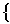 | big, bigl,
bigr, bigm | 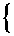 | bigg, biggl,
biggr, biggm | brace | |
| 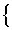 | Big, Bigl,
Bigr, Bigm | 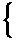 | Bigg, Biggl,
Biggr, Biggm | brack |
Misc Symbols
| Symbol | LaTeX Command | Symbol | LaTeX Command | Symbol | LaTeX Command |
|---|---|---|---|---|---|
| ∞ | infty
| ∀ | forall | ℘ | wp |
| ∇ | nabla | ∃ | exists | ∠ | angle |
| ∂ | partial | ∅ | emptyset | △ | triangle |
| ℑ | Im | ı | i | ◊ | lozenge |
| ℜ | Re | ȷ | j | ℏ | hbar |
| ℓ | ell | ı | imath | ′ | prime |
| … | dots, ldots,
hellip | ȷ | jmath | ¬ | lnot, neg |
cdots | : | colon | surd | ||
ddots | cdotp | ← | gets | ||
| ⋮ | vdots | ldotp | → | to | |
| ∵ | because | ∴ | therefore | ∝ | varpropto |
| ° | degree | ♧ | clubsuit | ♣ | varclubsuit |
| † | dag, dagger | ♡ | heartsuit | ♥ | varheartsuit |
| ‡ | ddag, ddagger | ♢ | diamondsuit | ♦ | vardiamondsuit |
| ↲ | ldsh | ♤ | spadesuit | ♠ | varspadesuit |
| § | mathsection |
Note
The exists command can be combined with the
not command to create the negated version of the
symbol. For example, \not\exists creates the symbol
∄.
Text Symbols
| Sample | LaTeX Command | Sample | LaTeX Command | Sample | LaTeX Command |
|---|---|---|---|---|---|
| £ | pounds,
textsterling | ¿ | textquestiondown | ❠ | quotedblbase |
| ¢ | textcent | ¡ | textexclamdown | ‵ | backprime |
| € | texteuro | « | flqq,
guillemotleft | space | |
| ¥ | yen | » | frqq,
guillemotright | ‰ | permil |
| ® | textregistered | § | S | \ | backslash
|
| ™ | trademark,
texttrademark | ¶ | P | ¦ | brokenvert |
| © | copyright |
Accents
| Symbol | LaTeX Command | Symbol | LaTeX Command | Symbol | LaTeX Command |
|---|---|---|---|---|---|
| á | acute | dot | tilde | ||
bar | ddot | vec | |||
breve | dddot | à | grave | ||
check | ddddot | hat |
Functions
| Sample | LaTeX Command | Sample | LaTeX Command | Sample | LaTeX Command |
|---|---|---|---|---|---|
arccos | det | ln | |||
arcsin | dim | log | |||
arctan | exp | max | |||
arg | gcd | min | |||
cos | hom | Pr | |||
cosh | ker | sec | |||
cot | lg | sin | |||
coth | lim | sinh | |||
csc | liminf | sup | |||
deg | limsup | tan |
Math Constructs
| Sample | LaTeX Command | Sample | LaTeX Command | Sample | LaTeX Command |
|---|---|---|---|---|---|
frac | stackrel,
overset | over | |||
sqrt | underset | overwithdelims | |||
bmod | binom, choose | overleftarrow | |||
pmod | pmatrix | overrightarrow | |||
widehat | matrix | overleftrightarrow | |||
widetilde | begin{array} | hline | |||
bra | begin{cases} | limits | |||
ket | left, middle,
right | nolimits | |||
braket |
Note
To create a matrix using the matrix and
pmatrix commands, use the &
symbol to separate columns, and \cr to separate rows. For
example, to create a 2–by–2 matrix, use the expression \matrix{a
& b \cr c & d}.
For large operators, MATLAB automatically adjusts the position of limits depending on
whether or not there is text inline with the equation. To force the display
of the limits above and below the operator, use the
limits command. To force the display of the limits
adjacent to the operator, use the \nolimits command. For
example, the expression \sum\limits_{i=0}^{10} displays
the limits of the summation operator above and below the operator. The
expression \sum\nolimits_{i=0}^{10} displays the limits
of the summation operator adjacent to the operator.
White Space
| Sample | LaTeX Command | Sample | LaTeX Command | Sample | LaTeX Command |
|---|---|---|---|---|---|
negthinspace | mathord | mathopen | |||
thinspace | mathop | mathclose | |||
enspace | mathbin | mathinner | |||
hspace | mathrel | quad | |||
kern,
mkern | mathpunct | qquad |
Text Styling
| Sample | LaTeX Command | Sample | LaTeX Command | Sample | LaTeX Command |
|---|---|---|---|---|---|
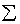
| displaystyle | text, textnormal,
textup | texttt | ||
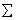
| textstyle | bf, textbf,
mathbf | textsf | ||
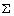
| scriptstyle | it, textit,
mathit | cal, mathcal | ||
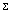
| scriptscriptstyle | rm, textrm,
mathrm | mathbb | ||
hbox, mbox | mathfrak |